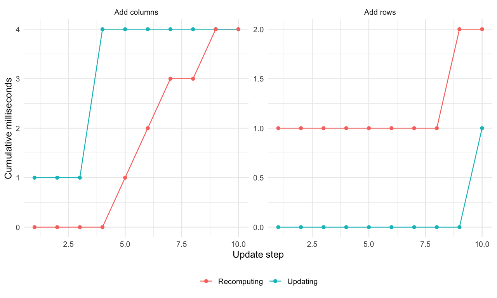
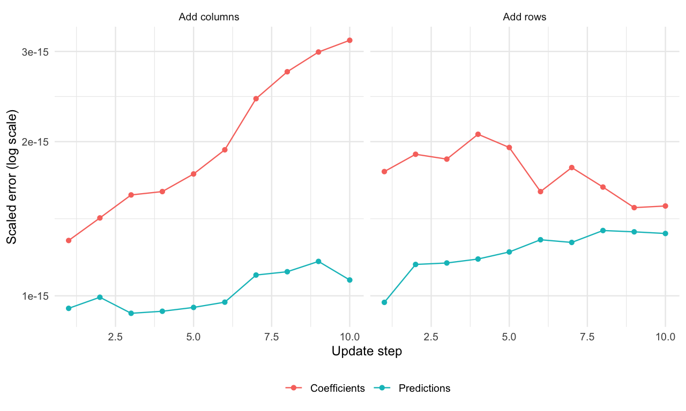

Ridge regression as the design grows
A sequence of ridge fits provides a useful setting in which to assess the value of updating a triangular factor. New observations change the information available about a fixed coefficient vector, whereas new predictors enlarge the model itself. Both operations can be represented as changes to an augmented least-squares design. This representation also allows us to consider more predictors than observations: a positive ridge penalty makes the augmented design full column rank even when the observed design is wide.
The comparison in this chapter concerns the numerical work required to fit the same specified model after a change in its design. We examine coefficient and prediction accuracy separately from elapsed time, and compare updating with a fresh LAPACK factorization of the augmented design. The penalty is specified in advance. Choosing it from the data is a separate procedure, discussed in the preceding chapter.
1 The augmented problem and the meaning of a fixed penalty
For a response matrix \(Y\in\mathbb R^{n\times q}\) and design \(X\in\mathbb R^{n\times p}\), consider \[ \widehat B_\alpha=\arg\min_B\{\|Y-XB\|_F^2+\alpha\|B\|_F^2\},\qquad \alpha>0. \] Writing \[ A_\alpha=\begin{bmatrix}X\\\sqrt\alpha I_p\end{bmatrix},\qquad Y_\alpha=\begin{bmatrix}Y\\0_{p\times q}\end{bmatrix} \] turns this criterion into an ordinary least-squares problem with a full-column-rank design. Indeed, for any nonzero vector \(v\), \[ v^\top A_\alpha^\top A_\alpha v=\|Xv\|_2^2+\alpha\|v\|_2^2>0. \] This argument does not require \(p\le n\). If \(A_\alpha=QR\), then \[ R^\top R=X^\top X+\alpha I_p,\qquad R^\top Z=X^\top Y,\qquad R\widehat B_\alpha=Z. \] The last two equations describe an R-only workflow, which maintains the response cross-product as well as the factor. They are not interchangeable, in numerical accuracy, with explicitly applying the orthogonal transformations to \(Y_\alpha\). We therefore use the latter approach as an independent reference when checking the updated coefficients. The use of QR and augmented systems for least squares is discussed in Golub and Van Loan (2013) and Björck (2015).
The public ridge functions use the normalized criterion \(\|Y-XB\|_F^2/n+\lambda\|B\|_F^2\), so the parameter in the augmented design is \(\alpha=n\lambda\). Holding \(\alpha\) fixed while adding observations consequently changes the equivalent normalized parameter to \(\lambda_{n+m}=\alpha/(n+m)\). Holding \(\lambda\) fixed instead changes the total penalty. We treat these two experiments separately rather than silently changing the optimization problem.
2 A reproducible fit with more predictors than observations
The following example has forty observations and eighty predictors. A positive penalty gives a unique fit, despite the rank deficiency of the unpenalized problem. The two public interfaces are compared with a QR solve of the augmented design, whose right-hand side is transformed orthogonally.
set.seed(312)
n_wide <- 40L
p_wide <- 80L
X_wide <- matrix(rnorm(n_wide * p_wide), n_wide, p_wide)
y_wide <- rnorm(n_wide)
alpha_wide <- 8
lambda_wide <- alpha_wide / n_wide
wide_QR <- fastQR::qrridge(y_wide, X_wide, lambda_wide, type = "QR")
wide_R <- fastQR::qrridge(y_wide, X_wide, lambda_wide, type = "R")
A_wide <- rbind(X_wide, sqrt(alpha_wide) * diag(p_wide))
f_wide <- fastQR::qr_lapack(A_wide, output = "thin")
beta_reference <- backsolve(
f_wide$R, crossprod(f_wide$Q, c(y_wide, rep(0, p_wide))))
c(QR_error = max(abs(wide_QR$coeff - beta_reference)),
R_error = max(abs(wide_R$coeff - beta_reference)))## QR_error R_error
## 1.137979e-15 5.273559e-16stopifnot(max(abs(wide_QR$coeff - beta_reference)) < 1e-10,
max(abs(wide_R$coeff - beta_reference)) < 1e-10)The legacy residual diagnostic \(n-p\) is not a degrees-of-freedom formula for ridge regression. The updated interfaces return NA for this diagnostic and its associated variance estimates when \(p>n\); the coefficients, fitted values and requested predictions remain available. Effective ridge degrees of freedom are obtained from the smoother matrix, as explained in the preceding chapter. A zero penalty still requires full column rank, and therefore cannot be used to obtain a unique wide-design fit through these interfaces.
3 Adding observations
Suppose that \(U\in\mathbb R^{m\times p}\) contains new observations and \(V\in\mathbb R^{m\times q}\) their responses. At fixed \(\alpha\), the maintained quantities satisfy \[ R_{\rm new}^\top R_{\rm new}=R^\top R+U^\top U, \qquad H_{\rm new}=H+U^\top V,\qquad H=X^\top Y. \] The existing row-update routine applies to the augmented design. The penalty rows need not be added again: they are already represented in \(R\).
set.seed(313)
new_X <- matrix(rnorm(5L * p_wide), 5L, p_wide)
new_y <- rnorm(5L)
R_before <- fastQR::qr_lapack(A_wide, output = "R")
H_before <- crossprod(X_wide, y_wide)
R_after <- fastQR::rupdate(A_wide, R_before, U = t(new_X),
type = "row", fast = FALSE)
H_after <- H_before + crossprod(new_X, new_y)
beta_after <- backsolve(R_after, forwardsolve(t(R_after), H_after))
fit_after <- fastQR::qrridge(c(y_wide, new_y), rbind(X_wide, new_X),
lambda = alpha_wide / (n_wide + 5L), type = "R")
stopifnot(max(abs(beta_after - fit_after$coeff)) < 1e-10)If the normalized parameter \(\lambda\) must remain fixed, the required identity is instead \[ R_{\rm new}^\top R_{\rm new} =R^\top R+U^\top U+m\lambda I_p. \] One valid construction appends both the observation rows and the additional penalty rows \(\sqrt{m\lambda}I_p\). This construction is exact, but its extra work can erase an advantage for updating. The timing comparison below includes this cost; a fixed-\(\alpha\) result must not be presented as evidence of a fixed-\(\lambda\) speedup.
4 Adding predictors
Let \(W\in\mathbb R^{n\times k}\) contain new predictors. With the same penalty on every coefficient, the enlarged augmented design can be arranged as \[ \begin{bmatrix} X&W\\\sqrt\alpha I_p&0\\0&\sqrt\alpha I_k \end{bmatrix}. \] The first \(p\) columns are the old augmented design with \(k\) zero rows appended. Their triangular factor is still \(R\). The new columns have observation part \(W\), zeros on the old penalty rows, and their own diagonal penalty block. Updating these columns therefore includes the penalty on the new coefficients; appending \(W\) alone would solve a different problem.
set.seed(314)
k_new <- 3L
W_new <- matrix(rnorm(n_wide * k_new), n_wide, k_new)
A_padded <- rbind(A_wide, matrix(0, k_new, p_wide))
W_augmented <- rbind(W_new, matrix(0, p_wide, k_new),
sqrt(alpha_wide) * diag(k_new))
R_enlarged <- fastQR::rupdate(A_padded, R_before, U = W_augmented,
type = "column", fast = FALSE)
H_enlarged <- rbind(H_before, crossprod(W_new, y_wide))
beta_enlarged <- backsolve(R_enlarged,
forwardsolve(t(R_enlarged), H_enlarged))
fit_enlarged <- fastQR::qrridge(y_wide, cbind(X_wide, W_new),
lambda_wide, type = "R")
stopifnot(max(abs(beta_enlarged - fit_enlarged$coeff)) < 1e-10)This column update includes a triangular solve whose accuracy depends on conditioning. The positive penalty separates the augmented columns from exact linear dependence, but does not provide a uniform accuracy guarantee for arbitrarily small penalties. The tests below use a moderate specified penalty and report the observed errors against an orthogonal reference.
5 Accuracy and time for the same updated fit
The experiments use tall and wide observed designs, two response variables, batches of ten observations or five predictors, and five calibrated timed repetitions after warm-up. Both timed workflows return coefficients through an R-only solve. The update starts from existing factors and a cached response cross-product; the alternative rebuilds the augmented factor and response cross-product. Construction of the augmented matrices needed by each workflow and the final triangular solves are included. Random-data generation, validation and initial factorization are excluded from these single-change measurements. The reference uses LAPACK without pivoting in both cases.
knitr::kable(ridge_comparison, digits = 3, row.names = FALSE,
caption = "Median milliseconds per fit after a single design change. Speedup is recomputation time divided by updating time; values above one favor updating.")| n | p | operation | update_ms | recompute_ms | speedup |
|---|---|---|---|---|---|
| 120 | 60 | columns_fixed_alpha | 0.094 | 0.164 | 1.750 |
| 120 | 240 | columns_fixed_alpha | 0.766 | 1.687 | 2.204 |
| 300 | 450 | columns_fixed_alpha | 2.437 | 5.875 | 2.410 |
| 120 | 60 | rows_fixed_alpha | 0.109 | 0.215 | 1.964 |
| 120 | 240 | rows_fixed_alpha | 0.766 | 1.625 | 2.122 |
| 300 | 450 | rows_fixed_alpha | 2.687 | 6.000 | 2.233 |
| 120 | 60 | rows_fixed_lambda | 0.160 | 0.211 | 1.317 |
| 120 | 240 | rows_fixed_lambda | 4.000 | 1.687 | 0.422 |
| 300 | 450 | rows_fixed_lambda | 24.500 | 6.000 | 0.245 |
ridge_validation_display <- ridge_validation
ridge_validation_display[, 4:7] <- lapply(ridge_validation_display[, 4:7],
function(x) formatC(x, format = "e", digits = 2))
knitr::kable(ridge_validation_display, row.names = FALSE,
caption = "Relative coefficient and prediction errors against QR of the augmented design with an orthogonally transformed response. Errors are scaled by the larger of one and the reference norm.")| n | p | operation | coefficient_error | prediction_error | recompute_error | public_fit_error |
|---|---|---|---|---|---|---|
| 120 | 60 | rows_fixed_alpha | 8.51e-16 | 8.69e-16 | 7.49e-16 | 8.03e-16 |
| 120 | 60 | rows_fixed_lambda | 9.74e-16 | 1.02e-15 | 7.66e-16 | 1.06e-15 |
| 120 | 60 | columns_fixed_alpha | 9.42e-16 | 8.09e-16 | 9.01e-16 | 1.07e-15 |
| 120 | 240 | rows_fixed_alpha | 6.17e-15 | 1.65e-15 | 6.10e-15 | 5.00e-15 |
| 120 | 240 | rows_fixed_lambda | 5.60e-15 | 1.64e-15 | 5.12e-15 | 4.34e-15 |
| 120 | 240 | columns_fixed_alpha | 6.25e-15 | 1.40e-15 | 6.28e-15 | 4.93e-15 |
| 300 | 450 | rows_fixed_alpha | 6.58e-15 | 2.52e-15 | 6.98e-15 | 5.31e-15 |
| 300 | 450 | rows_fixed_lambda | 6.04e-15 | 2.44e-15 | 7.29e-15 | 5.42e-15 |
| 300 | 450 | columns_fixed_alpha | 6.93e-15 | 2.09e-15 | 6.89e-15 | 5.16e-15 |
The difference between the two row experiments is part of the computational question. An observation update at fixed total penalty modifies only the data contribution, whereas retaining a fixed normalized penalty also modifies the regularization block. Likewise, a predictor update must introduce the new penalty directions. The measured comparison, including these operations, determines whether maintaining the factor is advantageous on a particular problem. The complete repetitions and validation values are saved with the guide rather than replaced by a universal speed claim.
6 Following the design across the boundary \(p=n\)
A sequence of changes tests whether errors accumulate in ways that a single update can conceal. One experiment adds predictors to a design with one hundred observations, increasing its width from sixty to one hundred and sixty columns. A second adds observations to a design with one hundred predictors, increasing its sample size from sixty to one hundred and sixty. Both hold \(\alpha=20\) fixed and cross the unpenalized boundary \(p=n\), while their augmented designs remain full column rank throughout.
Figure 8 displays the cumulative numerical work along each sequence. The same initial factorization cost is included in both curves. These path measurements are single elapsed-time trajectories, whereas the preceding table uses repeated calibrated calls. Small elapsed-time differences along the paths should therefore be read cautiously.
ridge_time_plot <- rbind(
transform(ridge_path, method = "Updating", milliseconds = 1000 * update_cumulative),
transform(ridge_path, method = "Recomputing", milliseconds = 1000 * recompute_cumulative))
ggplot2::ggplot(ridge_time_plot,
ggplot2::aes(step, milliseconds, colour = method)) +
ggplot2::geom_line() + ggplot2::geom_point(size = 1.5) +
ggplot2::facet_wrap(~operation, scales = "free_y") +
ggplot2::labs(x = "Update step", y = "Cumulative milliseconds", colour = NULL) +
ggplot2::theme_minimal(base_size = 11) +
ggplot2::theme(legend.position = "bottom")
Figure 8: Cumulative elapsed time while adding observations or predictors at fixed total penalty. Both workflows include their initial factorization. Each panel shows one growing-design trajectory, rather than repeated timing estimates.
Figure 9 compares the updated coefficients and predictions with a fresh orthogonal reference at every step. Agreement across the transition through \(p=n\) checks the augmented construction; it does not imply that an unpenalized wide-design problem has become identifiable.
ridge_error_plot <- rbind(
transform(ridge_path, quantity = "Coefficients", error = coefficient_error),
transform(ridge_path, quantity = "Predictions", error = prediction_error))
ggplot2::ggplot(ridge_error_plot,
ggplot2::aes(step, pmax(error, .Machine$double.eps), colour = quantity)) +
ggplot2::geom_line() + ggplot2::geom_point(size = 1.5) +
ggplot2::scale_y_log10() + ggplot2::facet_wrap(~operation) +
ggplot2::labs(x = "Update step", y = "Scaled error (log scale)", colour = NULL) +
ggplot2::theme_minimal(base_size = 11) +
ggplot2::theme(legend.position = "bottom")
Figure 9: Coefficient and prediction errors along the growing-design sequences. Each reference is recomputed from the current augmented design by QR and orthogonal transformation of the response. Values below machine precision are clipped only for logarithmic display.
The paths show how the factor and response information can be reused through a changing statistical model. They do not include selecting the penalty, and their times do not include evaluating predictions over a separate large test set. The distinction between maintaining numerical information and choosing a model is essential when using these examples to motivate a statistical application.